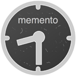

Memento for Wordpress

+

A Wordpress plugin to enable the Memento framework for time-based access
Latest release: 0.0.1-beta
What is Memento?
Memento is a HTTP-based framework that "bridges the past and present web." Sites that support it — like the Internet Archive and the Library of Congress — accept time-based web requests and return past versions of archived URLs.
What does this plugin do?
Rather than rely on patchy third-party services for preservation, sites with this plugin installed instantly become their own living, digital archive.
It automatically upgrades any Wordpress blog to support Memento. Past revisions of posts, inaccessible to users of a typical Wordpress site, are indexed and available for review.
How do I try it?
Download the source code from the links on this page and install it manually on your Wordpress site using the recommended method.
This software is a beta release and in active development. Please report issues, share your thoughts and contribute code patches via its repository on GitHub.
Who made it?
This plugin was developed by Ben Welsh, PastPages.org and the Reynolds Journalism Institute at the Missouri School of Journalism.